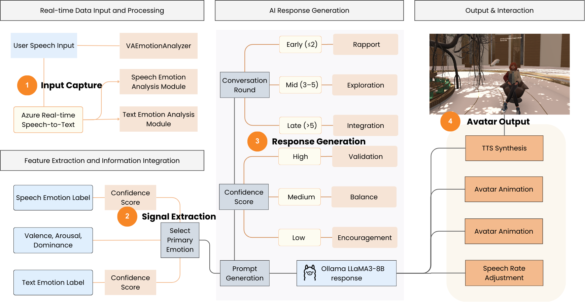
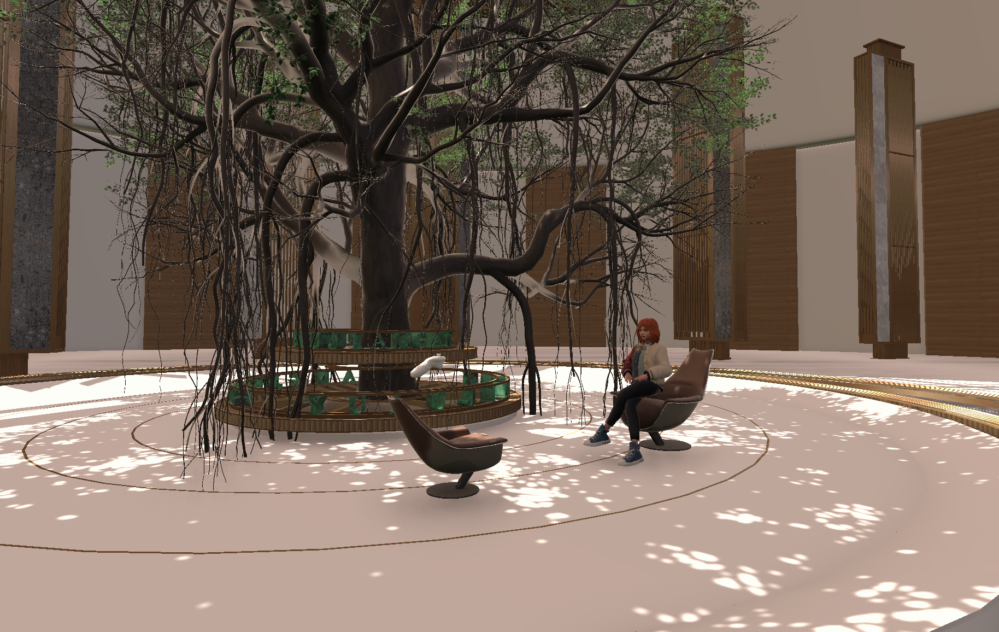
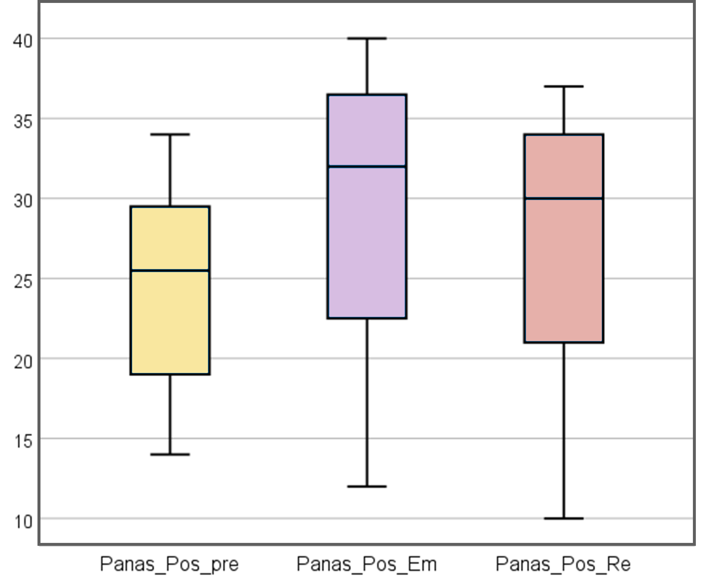
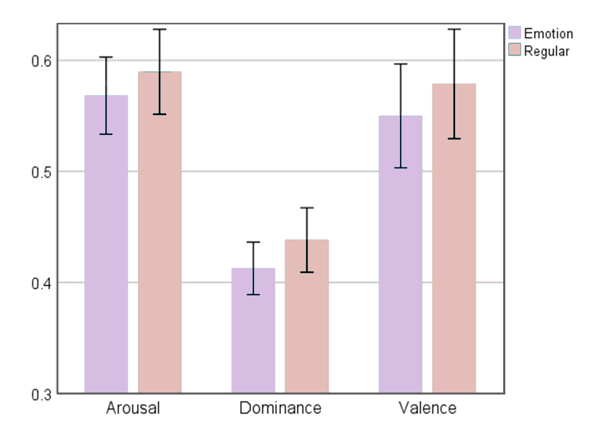
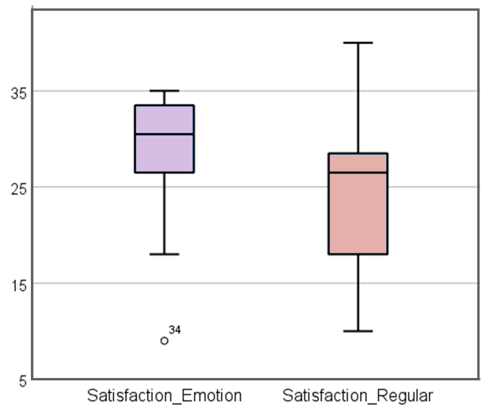

Multimodal Emotion Perception for VR Dialogue: Towards Improved User Experience
An affect-aware VR dialogue system that shifts the focus from recognition accuracy to user experience, integrating speech, text, VAD signals and adaptive avatar feedback in a closed loop.
Abstract
Emotion perception is essential for natural and immersive interaction, yet most VR dialogue research emphasizes recognition accuracy rather than its impact on user experience. We present an affect-aware VR dialogue system that integrates multimodal emotion recognition (speech, text, and valence-arousal-dominance signals) with a large language model, shifting the focus from recognition to improvement. In a within-subjects study (N=20), we compared this system with a baseline across emotional dynamics, self-reports, and satisfaction. Results show that the affect-aware system enhanced positive affect and satisfaction, while both systems reduced negative affect. This reveals a dual effect: VR broadly mitigates negative emotions, whereas affect-aware modules are more effective in strengthening positive experiences. We further identified a label-experience mismatch, as positive emotion labels did not directly translate into higher satisfaction, and demonstrated a moderating role of baseline anxiety, with stronger benefits for highly anxious users. These findings highlight the dual effects of VR and affect-aware design, offering empirical guidance for adaptive and empathic VR systems.
Project Overview
In virtual reality dialogue systems, traditional research focuses on recognition accuracy while neglecting user emotions. This project introduces an affect-aware VR dialogue system that shifts the paradigm from "recognition" to "experience." By integrating speech, text, and avatar feedback in a closed-loop framework, the system enhances immersion and authenticity, with strong implications for mental health and emotional support.
Research Design
The study involved 20 participants (aged 18-26, 70% female) in a within-subjects experiment comparing a baseline and an affect-aware system. Using Wav2Vec2, DistilBERT, and Word2Affect, the system recognized emotional cues and adapted responses via LLaMA3-8B for tone and avatar expression. Evaluation included PANAS, GAD-7, and VAS to assess affect, anxiety, and satisfaction.
Key Findings
The affect-aware system significantly improved satisfaction and positive affect, particularly reducing negative emotions among highly anxious users. Participants strongly preferred this system, describing interactions as more natural and emotionally engaging. This project introduces a paradigm shift from "recognition" to "experience," offering a closed-loop framework for affect-adaptive VR systems. It highlights emotional intelligence as a core principle in designing future virtual interactions, rather than a secondary feature.
Gallery
Replace the placeholder filenames with your real images (same names recommended).





